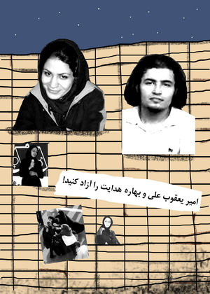
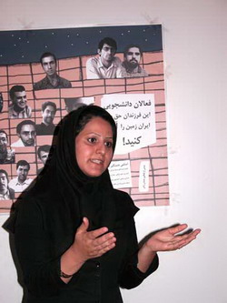
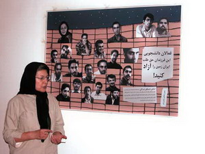
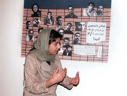
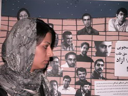

شماری از فعالان حقوق زنان و برخی از اعضای زن دفتر تحکیم وحدت (سمیرا صدری، نفیسه زارع و سحر ابونصر) پیرامون وضعیت بهاره هدایت و دیگر دانشجویان زندانی با یکدیگر دیدار کردند. در این نشست صمیمانه وضعیت نگران کننده بهاره هدایت در زندان، و تفتیش منزل وی و نگرانی خانواده بهاره و دیگر خانواده های دانشجویان زندانی، دغدغه مشترک شان بود، راه های پیگیری وضعیت بهاره هدایت، امیر یعقوب علی و دیگر دانشجویان دربند مورد بحث و تبادل نظر قرار گرفت. ابتدا سمیرا صدری، از اعضای سازمان ادوار تحکیم وحدت و رئیس شعبه تهران سازمان ادوار، توضیحاتی در مورد شرایط دانشجویان و به ویژه بهاره هدایت ارائه کرد. وی گفت: "هنوز مشخص نیست که 6 نفر از فعالان دانشجویی که در تحصن روز 18 تیر در مقابل دانشگاه امیرکبیر بازداشت شده اند اکنون کجا و در کدام بند زندان هستند. مسئولین نیز متاسفانه تاکنون از پاسخگویی به این مسئله پرهیز کرده اند".
نفیسه زارع نیز در این رابطه وضعیت کلیه دانشجویان را نگران کننده توصیف کرد.

خدیجه مقدم، از فعالان پیشکسوت جنبش زنان، در این نشست اظهار داشت: "من واقعا برای بهاره نگران ام همانطور که مادر بهاره گفت او چشمانش دچار عفونت شده است. من هم مادرم و درد و رنجی را که در این وضعیت مادر بهاره در سینه دارد درک می کنم. وقتی به عنوان مادر نمی دانی دخترت به عنوان تنها دختر جمع بازداشت شده الان در کجا و کدام زندان بسر می برد، دیوانه می شوی. من هم مانند مادر بهاره خوابم نمی برد و فکر می کنم به عنوان یک مادر حق دارم از مسئولان بخواهم که بچه هایمان را آزاد کنند". ناهید جعفری و طلعت تقی نیا از دیگر مادران جمع حاضر و نیز از فعالان جنبش زنان نیز اظهار همدردی و نگرانی خود را از وضعیت بهاره و دیگر دانشجویان اظهار کردند.

پروین اردلان، یکی دیگر از فعالان جنبش زنان گفت: "مگر دانشجویان چه می خواستند؟ آنها بی آنکه دیگران را متحمل هزینه کنند، بی آنکه تحصن کوچک و مسالمت آمیزشان را اعلام عمومی کنند، خواسته آزادی دوستان شان را در فضای عمومی منتشر کردند، آنها کدام اذهان را مشوش کردند، آنان کدام امنیت را برهم زدند، کدام ترافیک را به وجود آوردند که این چنین مظلومانه به زندان فرستاده می شوند؟ اگر این کار جرم است پس اصل 27 قانون اساسی به کدام تجمع و تحصن پاسخ می دهد؟ اگر قرار است با این کار دانشجویان مارا، بهاره های ما را، دختران و پسران ما را و خانواده هایمان را بترسانند باید بگوییم به خطا رفته اند، اکنون بزرگترین حامیان ما خانواده هایمان هستند، این را من نمی گویم، مادران بهاره ها و امیرها با حمایت شجاعانه از فرزندانشان نشانمان داده اند و می دهند"
ناهید کشاورز، یکی دیگر از فعالان جنبش زنان طی صحبت کوتاهی گفت: "نمی دانم چرا مسئولان به جای آن که جوانانی را که در این مملکت چنین آزاداندیش و انسان بارآمده اند، تشویق کند سرکوب می کند. جامعه ما برای آن که رشد و پیشرفت داشته باشد نیاز دارد که انسان های آزادیخواه و عدالت طلب بپرورد انسان هایی همچون بهاره که مدافع زندگی انسانی و برابرهستند به جای این که در زندان باشد باید مورد تشویق قرار بگیرد. الان جامعه پر از معضلاتی مانند اعتیاد که گریبان جوانان ما را گرفته است، حال در این میان عده ای جوان که به جای دنبال کردن صرفا منافع شخصی شان، در راه آرمان هایی مانند حقوق برابر انسان ها تلاش می کنند واقعا برای جامعه ما غنیمت است."
سوسن طهماسبی، از دیگر فعالان جنبش زنان نیز گفت: «مسئولانی که این همه از ارزش و مقام زن صحبت می کنند، الان باید پاسخ دهند که بهاره به عنوان تنها دختر زندانی، یکه و تنها در زندان چه می کند؟ ما واقعا می خواهیم امنیت جسمی و روحی او را تضمین کنند".
نوشین احمدی خراسانی اظهار داشت: "متاسفانه به ما مکانی عمومی برای ابراز سخنان مان نمی دهند. ما همگی نگران بهاره هدایت و دیگر دانشجویان هستیم، اما هیچ جایی برای ما نگذاشته اند که بتوانیم اعتراض مان را بیان کنیم. اما مسئولان باید بدانند که قلب ما و خانه های تک تک ما، خانه بهاره و دیگر دانشجویان است. برای ما هیچ جای تنفسی نگذاشته اند اما اگر همه راه های اعتراض ما به دستگیری بهاره پشت میله های زندان باشد آن را انتخاب خواهیم کرد."

سارا لقمانی نیز اظهار کرد: "خشونت هایی که در جامعه به هر قشر و گروهی اعمال می شود نهایتا این زنان هستند که به عنوان حلقه های ضعیف تر جامعه مورد خشونت بیشتری قرار می گیرند. بنابراین همه ما می دانیم که وقتی به دانشجویان خشونت روا می شود، مطمئنا این خشونت ها فقط بر آنان نیست که اعمال می شود بلکه بر زندگی همه مردم به ویژه زنان تاثیر منفی می گذارد."

جلوه جواهری، یکی دیگر از فعالان جنبش زنان در مورد وضعیت امیر یعقوب علی که به تازگی به خاطر جمع آوری امضاء در پارک دستگیر شده گزارشی ارائه کرد: "وضعیت امیر یعقوب علی نیز آنطور که خانواده اش و دوستان اش پیگیری کرده اند، نگران کننده است. تاکنون جواب خاصی به خانواده او نداده اند و احتمال می رود که به زندان اوین منتقل شده باشد." وی ادامه داد: "مسئولان باید پاسخ دهند که آیا جمع آوری امضاء هم جرم است؟"
زارا امجدیان از دیگر فعالان جنبش زنان اظهار امیدواری کرد که: "حالا که برخی از مسئولان خواسته های حقوقی جنبش زنان را خود بیان می کنند و برای تغییر قوانین تبعیض آمیز حرکت هایی در سطوح بالای حکومت در حال انجام شدن است، این واقعا بی انصافی است که افرادی همچون امیر یعقوب علی که برای تغییر این قوانین فقط امضاء جمع می کرده تا آن را به مجلس ببریم بازداشت و به زندان بیافتند."
در ادامه این دیدار نیلوفر گلگار، گزارشی از فعالیت های برخی از دانشجویان در رابطه با بازداشت های اخیر ارائه کرد و زینب پیغمبرزاده به ضرورت حمایت زنان از دانشجویان زندانی تاکید کرد. سپس حاضران به چگونگی راه های پیگیری وضعیت بهاره هدایت، امیر یعقوب علی و دیگر دانشجویان زندانی پرداختند.